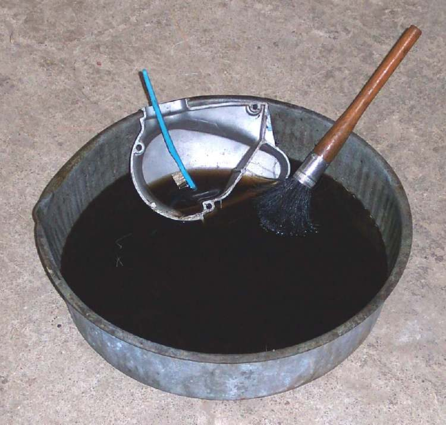
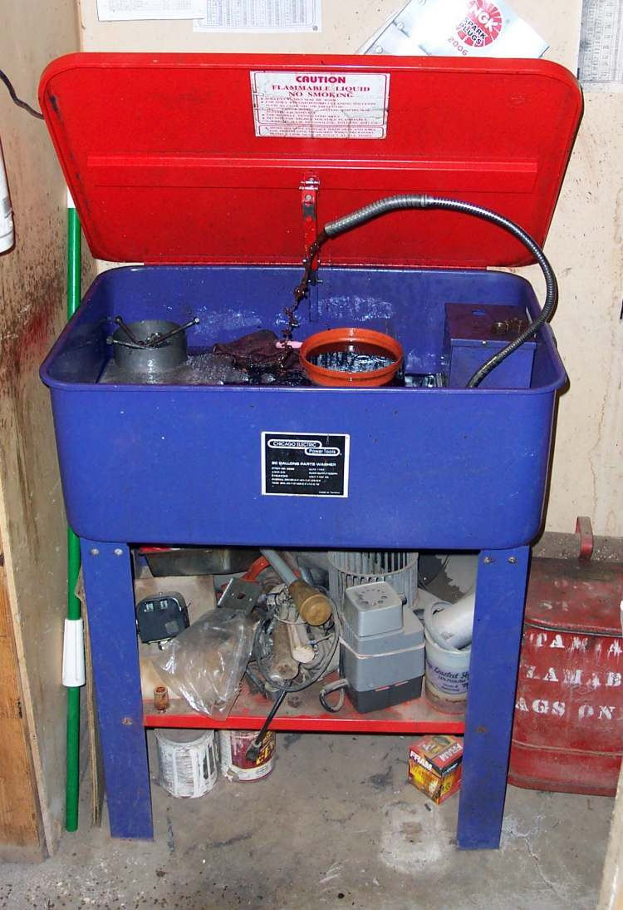
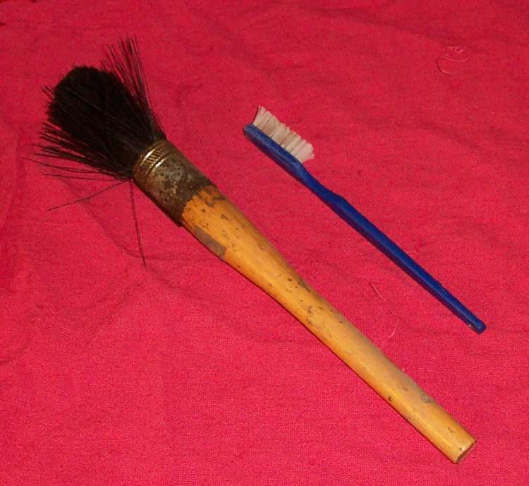
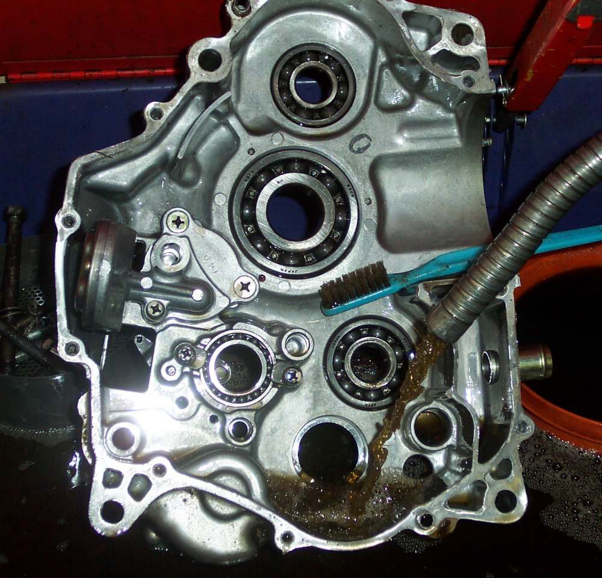

Dirty parts hide cracks, wear and leaks. Clean them before inspection or rebuild. Use a petroleum solvent made for parts cleaning. It cleans as well as petrol but is far safer.
Safety
- Never use petrol to clean parts. Its vapour ignites and has burned many people.
- Keep flames, sparks and cigarettes away from solvent. Work with good airflow.
- Wear gloves and eye protection. Keep solvent off skin.
- Do not spin a dry bearing with compressed air. It spins too fast and the bearing is damaged.
- Keep used solvent in a closed, labelled container.
You need
- A pan or parts washer with a pump, a stiff brush and an old toothbrush.
- Petroleum solvent from a motor spares shop or fuel supplier.
- Clean paper towels or a clean rag.
Steps
- Wash the outside of the engine first, with the engine in the frame if possible. Spray degreaser, brush it in, then rinse with water. This removes most of the dirt and keeps the solvent clean.
- Do not wash with water near electrical parts, or into the air intake or the exhaust.
- Dip each part in solvent and scrub it with the stiff brush. Use the toothbrush for grooves and small passages.
- Lift the part out and let it drain on paper towels.
- Blow it dry with compressed air if you have it, holding bearings still. Otherwise wipe and air dry.
- Oil bare steel parts at once. Inside an engine, water left behind makes steel rust.
- Soap-based degreasers are good outside the engine. Use solvent for the inside.
Check your work
- Surfaces are clean enough to see cracks, scores and wear.
- No solvent remains in oil passages or blind holes.
If it did not fix the problem
- Stubborn rust or paint: Blast-clean corroded parts.
- Planning a rebuild: Assess the top end.